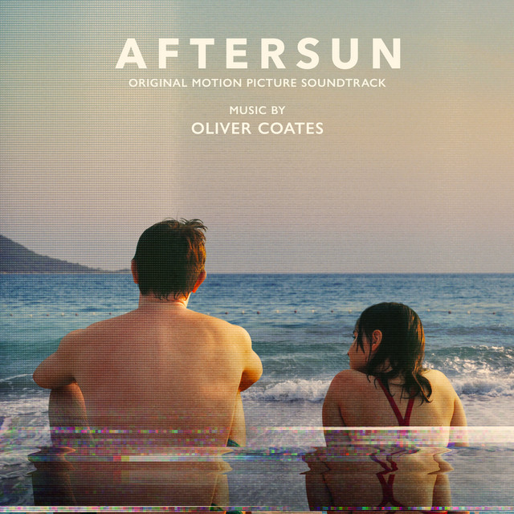

Oliver Coates - Aftersun



Información del álbum facilitada por discogs.com:
Fecha de lanzamiento: 2023
Géneros: Stage & Screen
Estilos: Score
Pais: UK
Votos: Media de 5.0 con 1 votos
Sello: Cause 4 Concern
Tracklist:
Memory Opening 1:20
One Without 4:02
Bus 2:03
DVCAM 1:26
Swimming Pool - Sky 2:55
Boat 1:35
Ocean>Rave 2:13
Gliders Peace Of Mind 2:57
Tai Chi 2:59
Sophie Pool With The Guys 2:09
Night 4:27
Limit 4:03
Happy Birthday Sophie 2:22
Last Dance (Score) 2:38